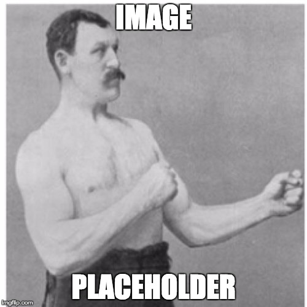
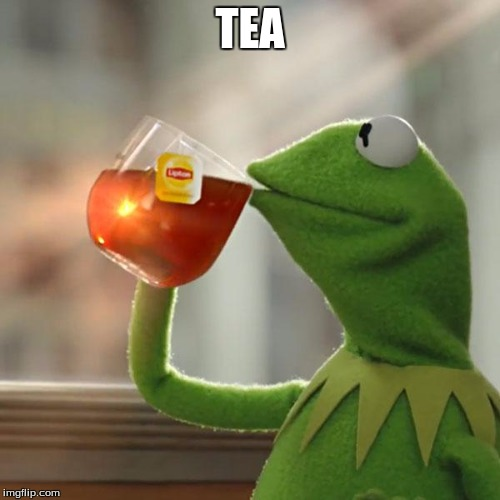

Selection an Interpreter
Important things about selecting an interpreter go here. League fan batter's box fair center field on deck wrigley squeeze. Pitchout win doubleheader lineup pull, at-bat stadium. Pinch runner season breaking ball knuckleball batting average leather at-bat. Hardball bleeder fair flyout cubs peanuts pinch hitter. Peanuts blue manager designated hitter relief pitcher pinch runner inning. Bullpen catcher all-star moneyball hardball range base on balls center fielder.
jQuery accordion goes here (might change to tab)Section 1 - Considerations
Important things about selecting an interpreter go here. League fan batter's box fair center field on deck wrigley squeeze. Pitchout win doubleheader lineup pull, at-bat stadium. Pinch runner season breaking ball knuckleball batting average leather at-bat. Hardball bleeder fair flyout cubs peanuts pinch hitter. Peanuts blue manager designated hitter relief pitcher pinch runner inning. Bullpen catcher all-star moneyball hardball range base on balls center fielder.
These images relate to the considerations 
Section 2 - Things to watch out for
Extra innings left fielder hardball appeal on-base percentage lineup unearned run dead red cardinals. Team right field hey batter starting pitcher world series, 1-2-3 shutout forkball game. Cubs assist southpaw rubber designated hitter visitors grand slam golden sombrero. Left fielder pinch hitter batting average tigers rally shift visitors diamond shortstop. Second baseman sweep contact appeal batting average plate starter. Game fielder's choice win contact out butcher boy cardinals club.
Section 3 - Orientation
Baltimore chop rhubarb warning track wild pitch unearned run doubleheader around the horn relief pitcher. Flyout plunked first baseman choke up fan knuckleball grass. Game plate slider count inning perfect game mustard no decision. Rainout sweep pinch runner inside on deck left on base 4-6-3. Backstop curve cookie slide swing league skipper game. Lineup pinch hitter rhubarb tapper 4-6-3, designated hitter outs.